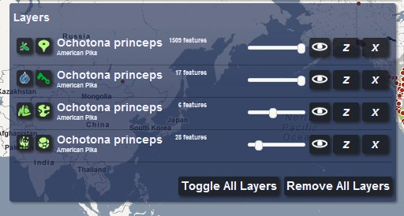

Map of Life demo release - Help page
Two short videos demonstrate taxonomic searches and the species list tool, which are the two main means to get results. Map of Life will work on all current versions of most browsers, but we cannot guarantee browser backwards compatibility (e.g. we expect that Internet Explorer 8.0 may not work, but IE9.0 should).
Searching and selecting species

Figure 1. The Search Widget
-
You may search for any species by scientific name (e.g. Ochotona princeps) or by vernacular name (e.g. American Pika)
-
Searching uses auto-complete and you can click on any listed species to return its distribution layers
-
You can also continue typing and press “Go” get all matching distribution layers (e.g. all with “Pika” or “Ochotona” in name)
-
After search, a list of distributional product layers appears showing Names, Sources, Types and Results
-
The two icons next to the species name represent layer source and type and roll-over provides a verbal description
-
Among product layers returned in “Results”, you can filter by clicking a specific Source or Type
-
Select any single, set or “all” of product layers in “Results” for display and click “Map Selected Layers”
Working with the Active Layers Interface

Figure 2. The Active Layers Widget
-
Selected distribution layers are “moved over’’ to your active layers, on the top right of the mapping UI.
-
Each layer has an “opacity slider” that you can adjust, along with three other icons:
-
an eye to make the layer visible or invisible
-
the letter “z” to zoom to the geographic extent of the layer
-
the letter “x” that closes the layer.
-
You may select a layer by clicking it and should see an outline in red around that layer. Now click on that any place on the map where that type of distributional product is visible.
-
Example: if “regional checklist” is selected, clicking on a region with species presence will retrieve region-specific information.
-
The active layers can be dragged up or down in the layer stack using your mouse. Doing so changes the layer ordering.
-
You can toggle all layers to become invisible or remove all layers at once using the buttons on the “active layers” window.
Species list tool
Figure 3. Species list tool settings
-
The species list tool will show a list of taxa in an area of interest.
-
Click “Species lists” on the main control widget to toggle the tool on/off on the bottom right of the screen.
-
Select search radius, taxonomic class, and data source, and then right-click (or if on a Mac, control-click) your mouse anywhere on the map.
-
A list of results is returned in a pop-up window which includes detailed coordinates of the search location, the total number of species found and number of conservation concern according to IUCN
-
Distribution layers for any species can be mapped right from the pop-up window
-
The results table can be sorted by all columns
-
Clicking on Species, Family, and Order names opens the respective Wikipedia pages
Interacting with the Maps
-
When a layer is selected in the Layers widget, click on appropriate map elements to retrieve metadata about that layer (for example, if species occurrence points is selected, click on any point to get its description)
-
You can pan and zoom using Google Maps features
-
You can change the base map using the widget on the lower left of the map application
Dashboard
-
The dashboard link lists summary information about all the products in the Map of Life.
-
Click dashboard entries for complete collections-level information about the products.
Legend
-
The legend shows Map of Life default coloring for bird range maps.
-
Different parts of the bird range maps represent different portions of migrant birds breeding or non-breeding ranges during summer or winter.